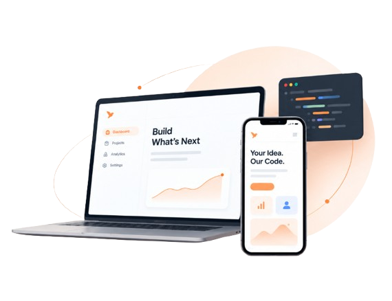

Need an online business presence?
A business website can help customers discover your company and understand your services.
Every business has different technology requirements. Some need a professional website to establish their online presence, while others need custom software to manage operations or mobile applications to serve their customers.
RiverBird helps businesses identify and explore suitable digital development solutions based on their goals, requirements and operational needs.
Whether you are planning a new digital project or improving an existing system, our team can help you understand the available options and take the next step.

We offer different development capabilities to support business requirements. Choose the service that best matches your project.
Build a professional website that presents your business, services and offerings clearly. We develop websites based on your business objectives, audience and functional requirements.
Improve business processes with software designed around your operational requirements. From workflow management to business-specific systems, explore software solutions that support your day-to-day activities.
Create digital applications that help customers and businesses access services and perform tasks more conveniently. The right application approach depends on your intended users, features and project objectives.
{
"platform": "Universal App",
"touchUX": "Native",
"sync": "Real-time"
}Choosing a development service starts with understanding the problem you want to solve.
A business website can help customers discover your company and understand your services.
Custom software may help organise workflows and manage business activities.
Application development may be suitable when your project requires specific features and user interactions.
If you are unsure which option is right for your business, discuss your requirements with our team.
Talk to Our TeamEvery project begins with understanding the business requirement. We focus on identifying the project scope and the functionality needed before moving towards development.
We discuss your business objectives, challenges, expected features and project expectations.
We identify a suitable development approach based on the requirements and intended users.
The project is developed according to the agreed scope and technical requirements.
The developed solution is reviewed to identify issues and check whether the agreed requirements are addressed.
The completed project is prepared for handover based on the agreed deliverables.
Choosing a development partner involves more than selecting a technology. It is important to understand your business requirements and identify a solution that supports your objectives.
At RiverBird, we focus on:
Understanding your business requirements before suggesting a solution.
Identifying the appropriate development service for your project.
Planning functionality around your intended users and business needs.
Maintaining communication throughout the project.
Discussing project scope and deliverables before development begins.
Answers to common questions about selecting the right development service, custom projects, and getting started.
RiverBird provides website development, software development and application development services. Each service addresses different business requirements, from establishing an online presence to building custom digital systems. You can explore the individual service pages to understand which option is suitable for your project.
The right option depends on what you want to achieve. A website is generally suitable for presenting your business online. Software can support internal processes and business operations, while applications are designed around specific user interactions and functionality. Discussing your requirements can help identify the appropriate direction.
Yes. You can discuss your project requirements with RiverBird to understand the suitable development approach. The proposed solution, features, technical requirements and project scope will depend on the nature of your project.
You can begin with your business objectives, the problem you want to solve, expected features, intended users and any existing website or system details. Sharing these requirements helps the team understand the project and discuss a suitable approach.
You can contact RiverBird through the website to discuss your requirements. Share a brief description of your project, the type of solution you are considering and your business objectives. The team can then discuss the next steps based on your needs.
Have a website, software or application project in mind? Tell us about your business requirements and explore the development approach that may be suitable for your goals.
Websites
Corporate & Brands
Software
Workflows & ERP/CRM
Applications
Mobile & Web Apps
Reliable Delivery
Tested & Handed Over